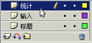
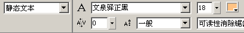
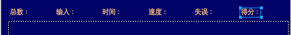
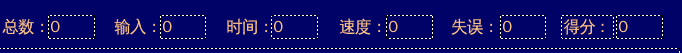
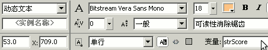

Flash脚本实例《打字》制作教程
作者：TeliuTe 来源：基础教程网
在标题下面有一排统计的文本框，用于显示打字效果，下面我们来看一个练习；
1、文本框
1）在图层面板中，新增一个图层，重命名为“统计”；

2）选择文本工具，在属性面板里设定为静态文本，文泉驿正黑，18号，橘色(#FFC384)；

3）输入“总数：”，并把位置调好，然后复制粘贴上五个，分别修改名称为“输入、时间、速度、失误、得分”，对齐排列均匀；

4）再选择文本工具，设定为动态文本，在“总数：”的后面点击一下，
然后拖动宽度手柄，大概能容纳4个字符即可，宽度52左右，在里面输入一个0；
5）点选择工具，再复制粘贴上五个动态文本框，对齐排列到各自的后面；

2、设置实例名称
1）依次选中各个动态文本框，在属性面板中把变量名称分别修改为 strTotal、strInTotal、strInTime、strInSpeed、strErrTotal、strScore

2）实例名称和变量的区别在于，实例是一个对象，具有更多的属性和方法，变量一般只存放某一个数据；
3）保存一下文件，按Ctrl+回车键测试一下影片；
本节学习了设置统计文本框的操作，如果你成功地完成了练习，请继续学习下一课内容；
本教程由86团学校TeliuTe制作|著作权所有
基础教程网：http://teliute.org/
美丽的校园……
转载和引用本站内容，请保留版权信息和本站链接。